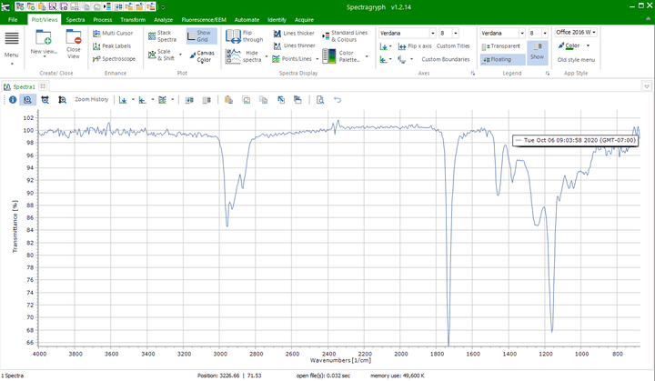

File Conversion in SpectraGryph
Jessica Meyers, Jeremy Conkle, Win Cowger, Zacharias Steinmetz, Andrew Gray, Chelsea Rochman, Sebastian Primpke, Jennifer Lynch, Hannah Hapich, Hannah De Frond, Keenan Munno, Bridget O’Donnell
2024-06-23
Source:vignettes/spectragryph.Rmd
spectragryph.RmdSpectragryph supports many spectral file conversions which facilitate data import to Open Specy.
Download Spectragryph from https://www.effemm2.de/spectragryph/down.html
Open Spectragryph and upload your file by dragging and dropping it into the console.

- Click File, Save/export data, save data as, and save it as an spc file.

- Then upload that .spc file to Open Specy.